A meek Hobbit from the Shire and eight companions set out on a journey to destroy the powerful One Ring and save Middle-earth from the Dark Lord Sauron.
Director: Peter Jackson
Writers: J.R.R. Tolkien (novel), Fran Walsh (screenplay)
Stars: Elijah Wood, Ian McKellen, Orlando Bloom
Photos
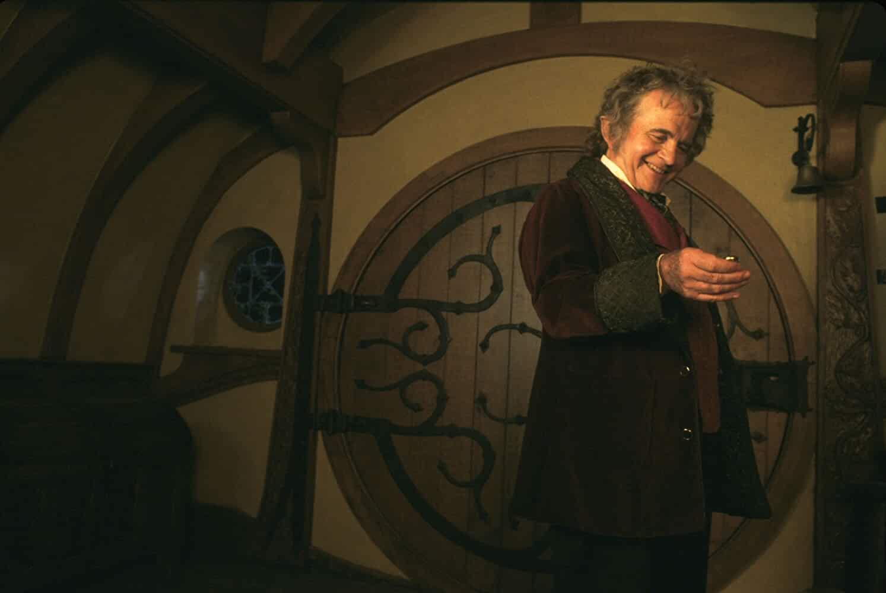
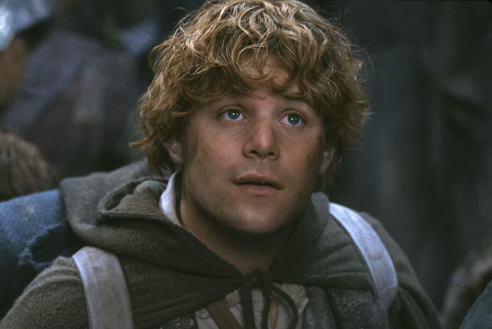
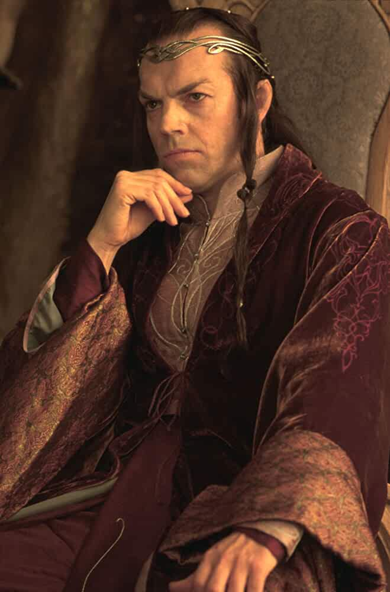
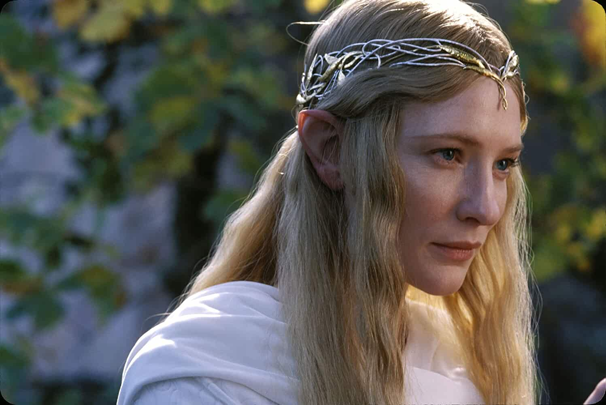
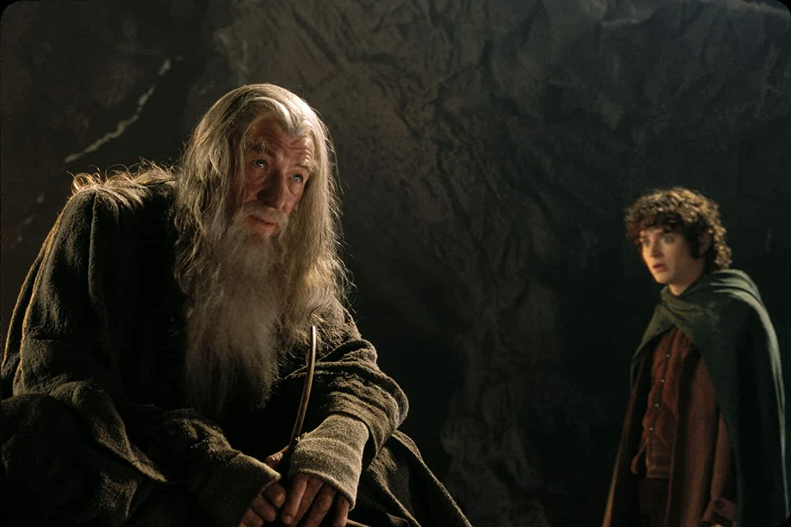
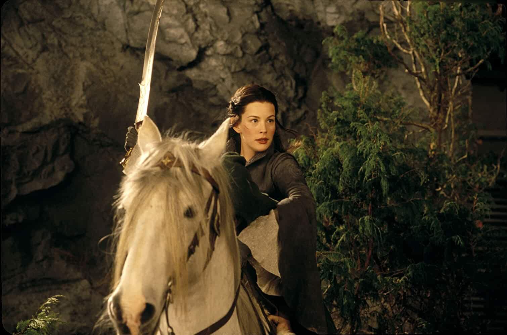
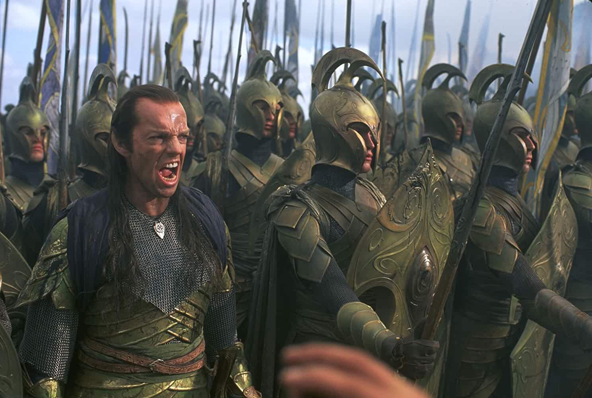
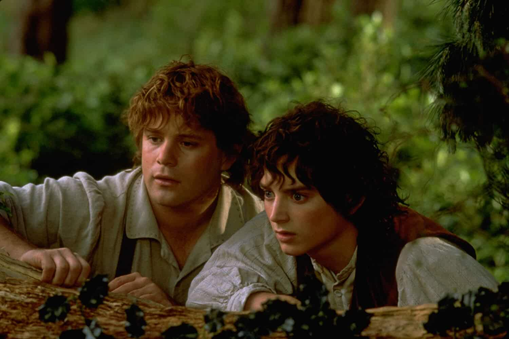
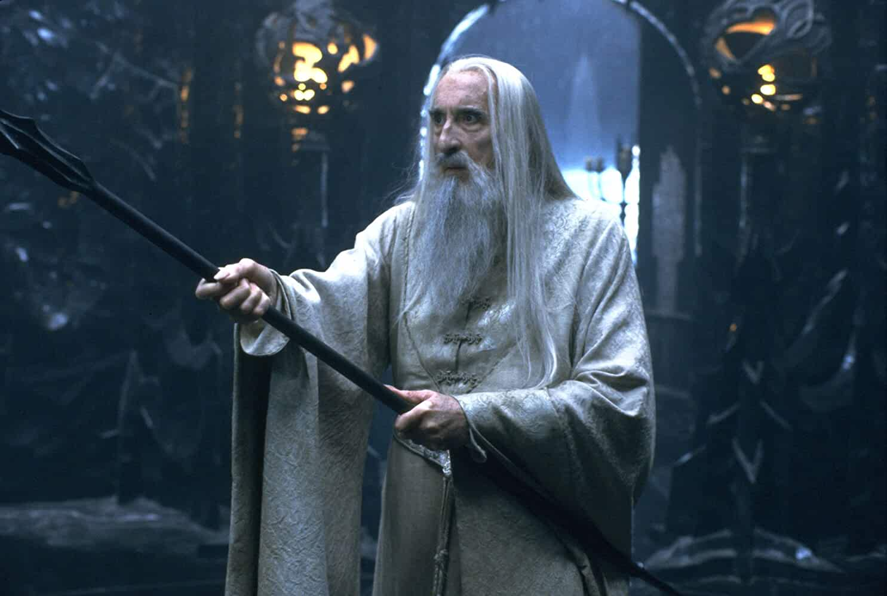
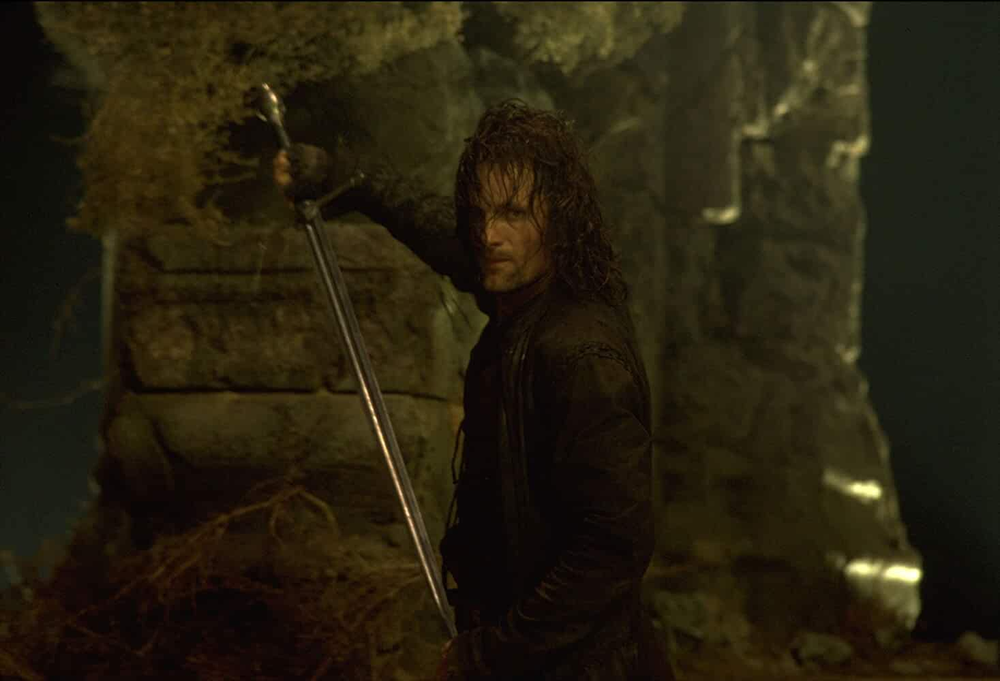
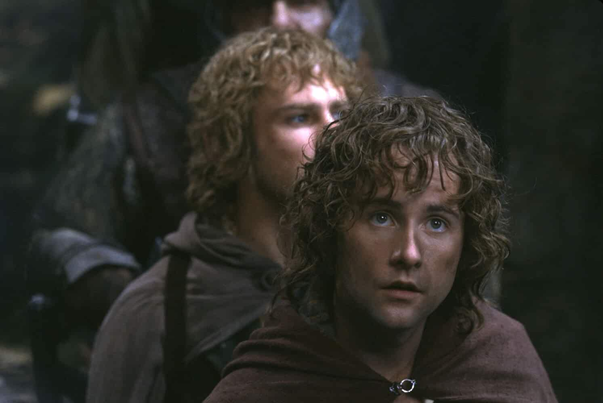
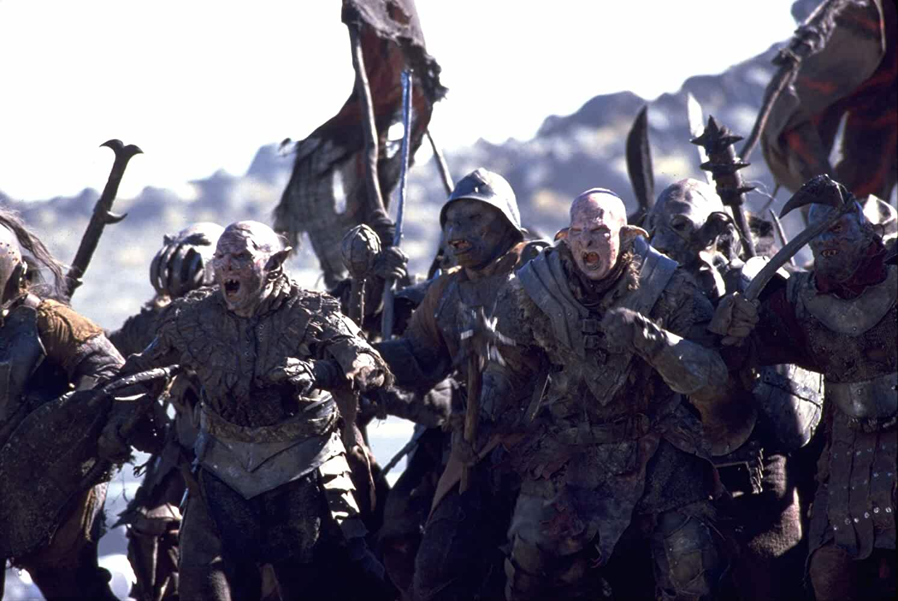
Cast
Alan Howard Alan Howard ... Voice of the Ring (voice)
Noel Appleby Noel Appleby ... Everard Proudfoot
Sean Astin Sean Astin ... Sam
Sala Baker Sala Baker ... Sauron
Sean Bean Sean Bean ... Boromir
Cate Blanchett Cate Blanchett ... Galadriel
Orlando Bloom Orlando Bloom ... Legolas
Billy Boyd Billy Boyd ... Pippin
Marton Csokas Marton Csokas ... Celeborn
Megan Edwards Megan Edwards ... Mrs. Proudfoot
Michael Elsworth Michael Elsworth ... Gondorian Archivist
Mark Ferguson Mark Ferguson ... Gil-galad
Ian Holm Ian Holm ... Bilbo
Christopher Lee Christopher Lee ... Saruman
Lawrence Makoare Lawrence Makoare ... Lurtz
Storyline
An ancient Ring thought lost for centuries has been found, and through a strange twist of fate has been given to a small Hobbit named Frodo. When Gandalf discovers the Ring is in fact the One Ring of the Dark Lord Sauron, Frodo must make an epic quest to the Cracks of Doom in order to destroy it. However, he does not go alone. He is joined by Gandalf, Legolas the elf, Gimli the Dwarf, Aragorn, Boromir, and his three Hobbit friends Merry, Pippin, and Samwise. Through mountains, snow, darkness, forests, rivers and plains, facing evil and danger at every corner the Fellowship of the Ring must go. Their quest to destroy the One Ring is the only hope for the end of the Dark Lords reign. Written by Paul Twomey
Details
Country: New Zealand | USA
Language: English | Sindarin
Release Date: 19 December 2001 (USA)
Also Known As: The Lord of the Rings: The Fellowship of the Ring:
Filming Locations: Fort Dorset, Miramar, Wellington, New Zealand
Runtime: 178 min | 208 min (Special DVD Extended Edition) | 228 min (Blu Ray Extended Edition) | 171 min (DVD Widescreen Edition)
Sound Mix: DTS | Dolby Digital EX | SDDS
Color: ColorDetails
Did You Know?
Trivia
In the movies, the shards of Narsil are kept at Rivendell, and not reforged and given to Aragorn until midway through the third movie. This is a notable difference from the book, in which Aragorn is already in possession of the broken sword when the Hobbits first meet up with him in Bree. According to Peter Jackson's commentary on the DVD, one of the reasons for this change is because he felt Aragorn would look silly wielding a broken sword.
Goofs
Just after Bilbo's panicked search for the ring in Bag End, the camera pulls away for a long shot, and Bilbo's foot can be seen bouncing on the ground, revealing it to be a rubber prosthetic.
Quotes
[first lines]
Galadriel: The world is changed. I feel it in the water. I feel it in the earth. I smell it in the air. Much that once was is lost, for none now live who remember it. It began with the forging of the Great Rings. Three were given to the Elves, immortal, wisest and fairest of all beings. Seven to the Dwarf lords, great miners and craftsmen of the mountain halls. And nine, nine rings were gifted to the race of Men, who, above all else, desire power. But they were, all of them, deceived, for ...
Connections
Referenced in George Lopez: George of the Rings (2004)
Soundtracks
The Road Goes Ever On
(uncredited)
Music by Howard Shore
Lyrics by J.R.R. Tolkien
Performed by Ian McKellen and Ian Holm